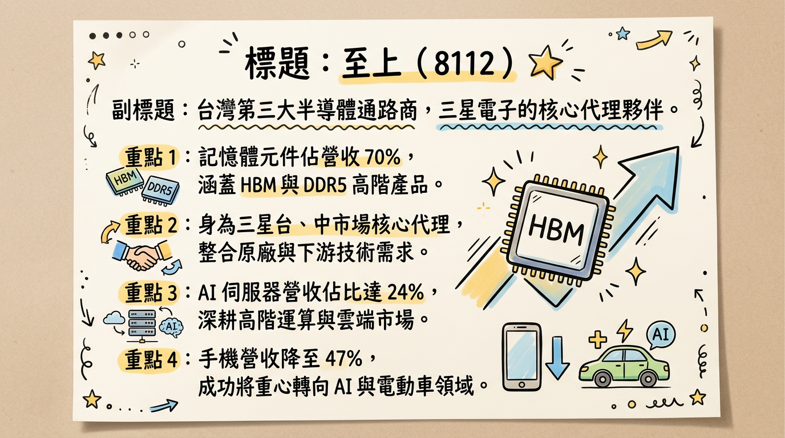
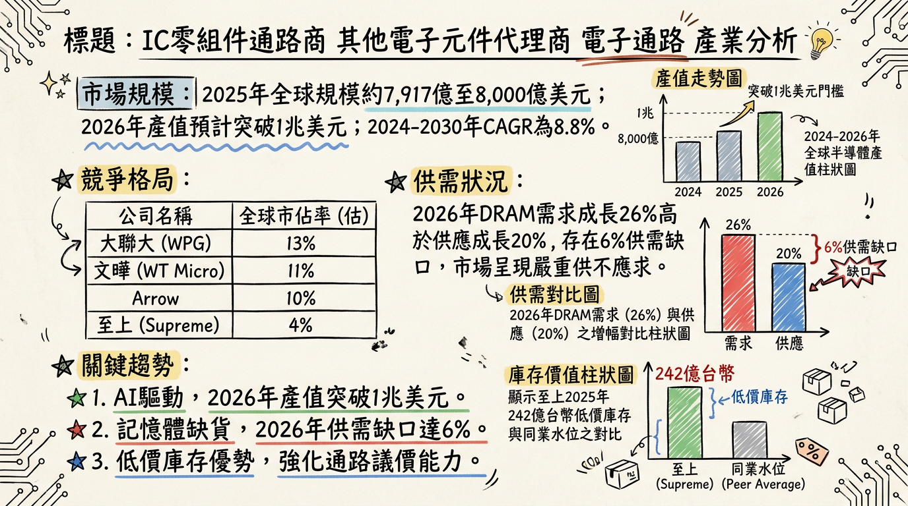
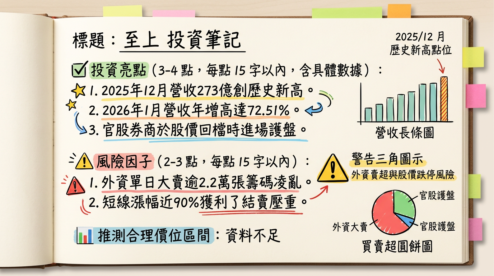

8112 至上 深度研究報告
一句話摘要
「三星記憶體代理龍頭，憑藉 242 億低價庫存與 AI 伺服器 HBM 轉型，迎接 2026 年獲利爆發期。」
公司概覽
至上（8112）為台灣第三大 IC 零組件通路商，僅次於大聯大與文曄。公司核心競爭力在於與南韓 三星（Samsung） 的深厚代理關係，範圍涵蓋三星電子（記憶體/面板）、三星電機（被動元件）及三星 SDI（電池）。
營收結構（2025 H1）
| 業務類別 | 營收佔比 | 核心產品 |
|---|
| 記憶體元件 | 70% | DRAM (DDR4/DDR5), NAND Flash, SSD, HBM3E/4 |
| 非記憶體元件 | 15 - 20% | 驅動 IC、PA、PMIC、聯發科中低階手機晶片 |
| 其他事業 | 10% | LED、顯示器面板、大健康醫材、電動車電池 |
應用端佔比變動
| 應用領域 | 2024 佔比 | 2025 H1 佔比 | 趨勢備註 |
|---|
| 伺服器 / AI 伺服器 | 20% | 30% | AI 伺服器單一項目佔約 24%，成長最快 |
| 移動裝置 (手機) | 57% | 47% | 反映中低階手機需求放緩，由量轉價 |
核心競爭優勢
三星戰略夥伴： 三星 HBM、DDR5 核心供應者。在 AI 伺服器大量消耗 HBM 產能導致標準型記憶體缺貨時，至上擁有優先取貨權。
精準囤貨策略： 2025 Q3 底帳面庫存高達 242 億元，多為低價庫存。隨 2026 年 DRAM 預計供需缺口達 6%，獲利將隨報價上漲大幅擴張。
高配息傳統： 2024 年盈餘分配率達 96%，具備強大下檔防禦性。
財務分析
近期月營收趨勢表格
| 月份 | 營收 (億新台幣) | 月增率 MoM | 年增率 YoY | 備註 |
|---|
| 2026/01 | 256.31 | -6.12% | +72.51% | 歷史次高，維持強勁動能 |
| 2025/12 | 273.02 | +7.63% | +32.28% | 創下單月歷史新高 |
| 2025/11 | 253.67 | +43.60% | +81.25% | 營收開始爆發性增長 |
| 2025/10 | 176.64 | -10.78% | +10.19% | 成長增溫期 |
| 2025/09 | 197.98 | +23.84% | -19.48% | 基期調整 |
| 2025/08 | 159.87 | -9.85% | +0.10% | 需求回溫前夕 |
年度獲利趨勢
- 2024 (實際)： 營收 2,370.08 億元，EPS 3.49 元。
- 2025 (估計)： 營收 2,265.28 億元 (YoY -4.4%)，前三季累計 EPS 1.62 元，全年估 2.2~2.6 元 (受 H1 景氣影響)。
- 2026 (展望)： 法人預估 EPS 挑戰 5.0 至 6.33 元。
法說會重點
- 產品線導向： 管理層強調營收重點已由「手機」轉向「伺服器」。AI 伺服器帶動的高階記憶體拉貨，將彌補中低階手機的疲弱。
- HBM 進度： 積極切入 Samsung HBM3E 代理，2025 下半年小量出貨，2026 年隨三星產能釋出將顯著放量。
- 地區去風險化： 中國市場營收佔比已從 80% 降至 70%，台灣及美國市場佔比分別提升至 21% 與 9%。
券商觀點
| 券商名稱 | 目標價 | 評等 | 報告日期 | 2026 EPS 預估 |
|---|
| CMoney 法人部 | N/A (PE 13x) | 維持正面 | 2026/02/03 | 6.33 元 |
| 萬寶投顧 | 估補漲空間 | 重申買進 | 2026/02/06 | 5.00 - 6.00 元 |
| 國票投顧 | 100 元 | 初評買進 | 2024/06/06 | -- |
財報深度分析
利潤率趨勢表格
| 季度 | 毛利率 (GM) | 營業利益率 (OPM) | 稅後淨利率 (NPM) | 單季 EPS |
|---|
| 2025 Q3 | 2.64% | 1.63% | 1.07% | 1.01 元 |
| 2025 Q2 | 2.87% | 1.92% | 0.38% | 0.34 元 |
| 2025 Q1 | 2.47% | 1.33% | 0.56% | 0.27 元 |
- 存貨分析： 截至 2025 Q3 底存貨達 242.4 億元，存貨週轉天數由 2024 年底的 54 天大幅下降至 38.91 天，顯示去化極快。
- 資本支出： 維持在單季 500 萬至 1,800 萬元，主要用於倉儲自動化，對獲利無負擔。
股權異動與資本結構
- 可轉換公司債 (CB)： 至上十（811210），最新轉換價 73.5 元。目前股價處於價內/價平，需注意轉換稀釋壓力。
- 申報轉讓： 董事長葛均曾於 2024 年大舉轉讓 3,000 張，但 2025 年至 2026 年初尚未見重大轉讓紀錄，籌碼相對穩定。
- 負債比率： 70.24%，為通路業常態，但較去年同期略有下降。
產業分析
全球前 5 大半導體通路商市佔率 (2025 估計)
| 排名 | 公司名稱 | 總部 | 市佔率 | 核心優勢 |
|---|
| 1 | 艾睿電子 (Arrow) | 美國 | 20% | 全球化、產品線最廣 |
| 2 | 安富利 (Avnet) | 美國 | 16% | 工業、車用強項 |
| 3 | 大聯大 (WPG) | 台灣 | 14% | 亞太區規模第一 |
| 4 | 文曄 (WT Micro) | 台灣 | 12% | 收購 Future 後規模暴增 |
| 5 | 至上 (Supreme) | 台灣 | 5-7% | 三星記憶體全球最大代理 |
- 市場趨勢： 2026 年全球半導體產值將突破 1 兆美元。DRAM 需求年增 26%，供應僅 20%，6% 的缺口 將支撐報價維持高位。
近期催化劑
1. 2025 年 12 月營收創歷史新高（273 億元）。
2. 三星 HBM3E/HBM4 代理權放量。
3. 記憶體報價 2026 Q1 預計季增 50% 以上。
1. 2026/02/02 漲多後的回檔修正（觸及跌停 76.2 元）。
2. 美國對非美記憶體廠（三星）的潛在關稅威脅。
⭐ 成長動能時間軸
- 2025 Q3： 囤積 242 億低價庫存（完成佈局）。
- 2025 Q4： 營收連續兩個月創新高（動能確認）。
- 2026 Q1： 三星 HBM3E 擴大供貨，配合標準型記憶體漲價紅利（毛利回升）。
- 2026 Q2： 子公司高達電子電動車模組開始貢獻穩定營收。
- 2026 H2： HBM4 產能鎖定，AI 伺服器佔比挑戰 35% 以上。
2026 展望
- 成長動能： AI 伺服器需求強勁、記憶體結構性缺貨帶動的 Spread（價差）擴張。
- 主要風險： 營收 70% 集中於大中華區的地緣政治風險、台幣升值造成的匯損風險。
投資結論
基本面極佳： 2026 年 EPS 有望從 2025 年的低谷翻倍至 5.5-6.0 元區間。
估值空間： 以 2026 年 EPS 6 元、PE 13-15 倍計算，合理股價區間落在 78 ~ 90 元。
操作建議： 近期（2026/02）股價回檔至 76-80 元區間為籌碼調節期，具備支撐，建議在 80 元以下分批佈局，目標參與 2026 年全年的庫存增值紅利。
本報告由 AI 自動產生，資料來源為公開網路資訊，僅供參考，不構成投資建議。
產生時間：2026-03-04 08:10
📊 資訊卡


